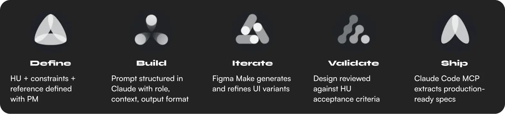
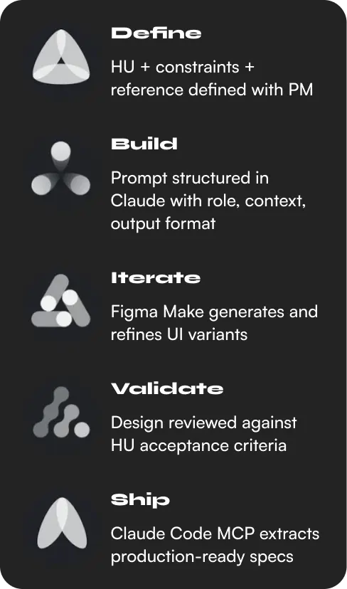
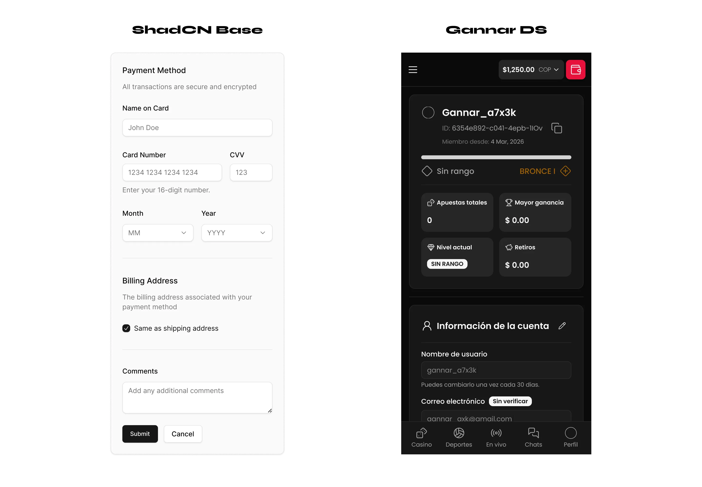
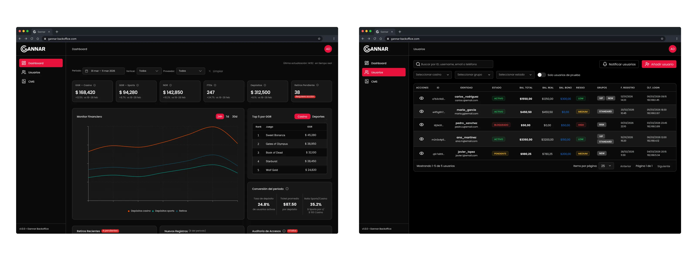
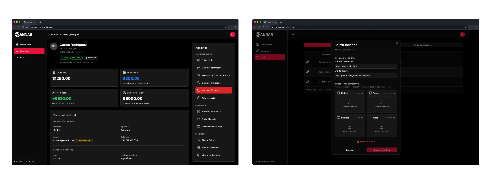
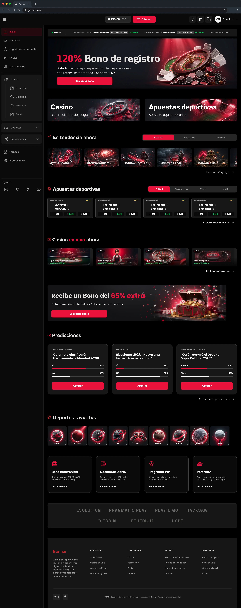
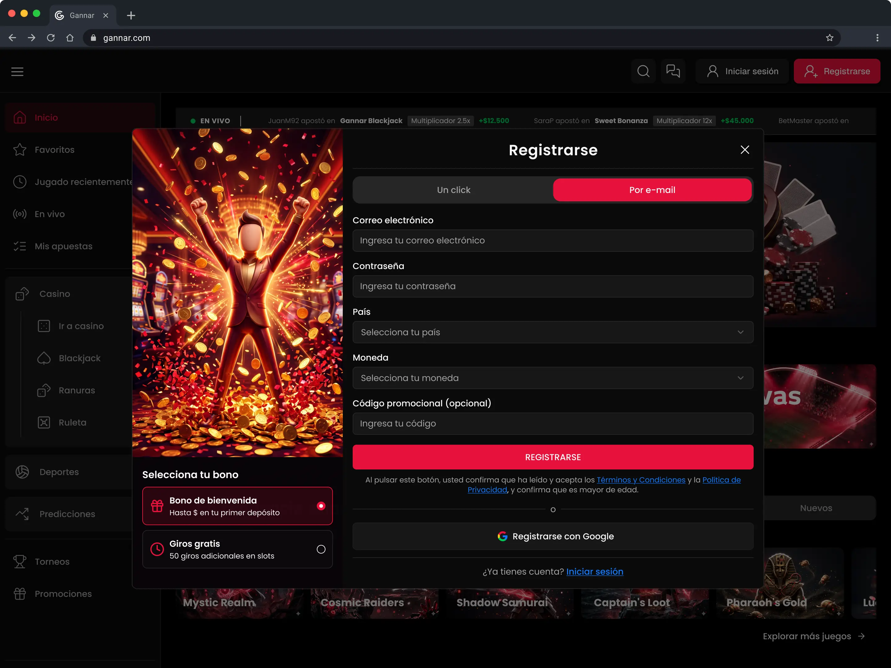
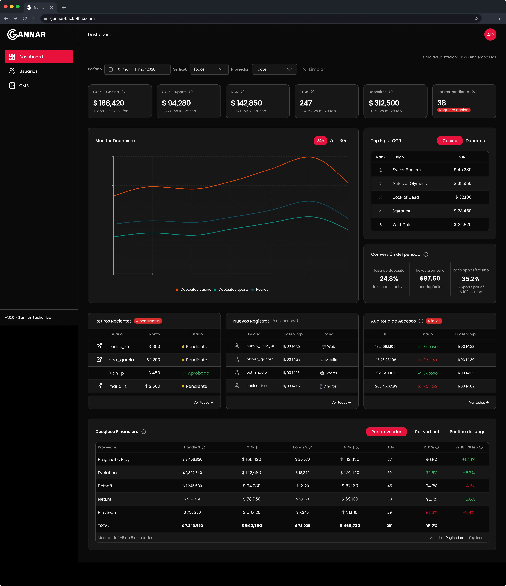
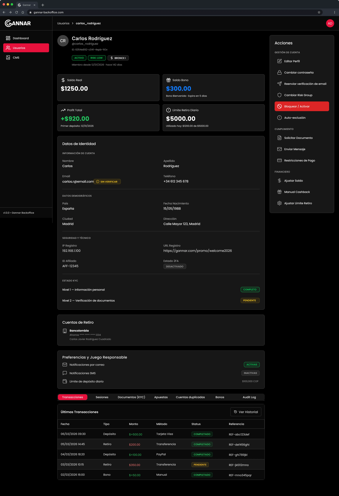

The team needed to launch their own casino before the 2026 World Cup to replace a third-party service generating double operational costs. With a strategy defined across design, PM, and development — built on AI tooling, shared references, and open source resources — the complete MVP of two platforms was delivered in 14 days.
AI-augmented workflow as a team strategy
This wasn't an isolated design decision — it was a joint bet between design, PM, and development to compress months of production into weeks. The rationale was clear: without this approach, the 2026 World Cup deadline was unreachable.


ShadCN as the bridge between design and code
A joint decision with development. By using an open source design system already living in the team's stack, every designed component had a direct code equivalent — eliminating handoff friction in a timeline with zero margin.

MVP scope defined upfront, not discovered along the way
With PM and stakeholders, the team explicitly agreed on what entered the MVP and what stayed for phase 2. This protected the timeline and prevented design debt from accumulating under pressure.






"Designing at speed isn't about moving fast. It's about making fewer, better decisions earlier."
"The most valuable design work happened before opening Figma — aligning on scope, stack, and strategy with the team."